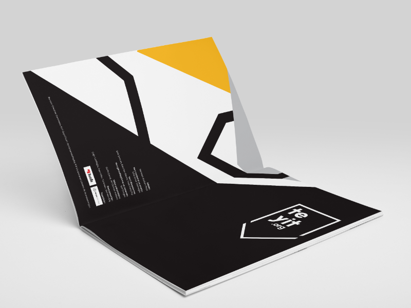
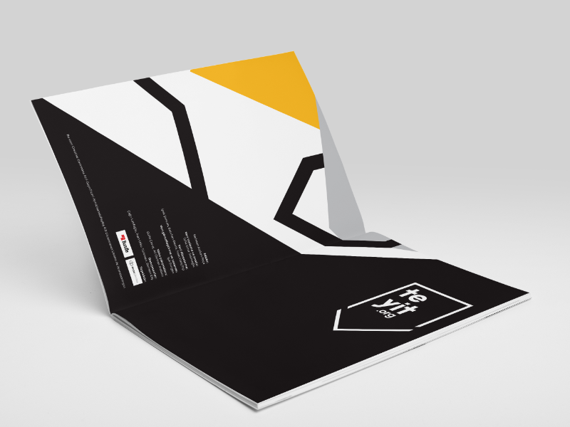
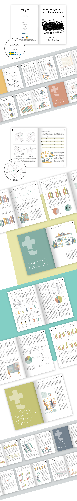

Editorial & Data Visualization for Teyit
2017 - 2019Freelance design of two large-scale research publications for Teyit, combining editorial design and data visualization to clearly communicate complex information. Features custom charts, infographics, and a cohesive visual language to present findings from a nationwide survey of 1,500 participants on media trust, political polarization, and news verification in Turkey, making the insights accessible and engaging.
 

Misinformation Analysis Report (2017) ↗
- Data visualization for 7,628 user-reported content claims
- Statistical infographics and trend analysis charts
- Crisis event timeline visualizations
- Case study layouts with supporting graphics
Media Trust & Polarization Study (2019) ↗
Editorial design and data visualization for nationwide research examining media consumption patterns and political polarization across Turkish demographics.
- Survey data visualization for 1,500-participant research
- Complex statistical chart systems
- Cross-demographic analysis graphics
- Comparative media consumption infographics
Impact
Reports became key reference materials for media literacy initiatives and policy discussions. Design approach successfully made complex research findings accessible to diverse audiences from academics to general public.
